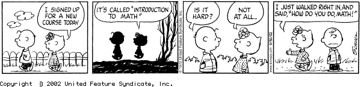

|
MATH 301 Exploration & Proof Spring 2024 |
 |
| Class meetings | Mondays, Wednesdays, Fridays 10:00-10:50, BH 46 |
| Prerequisites | MATH 226 and ENGL 214 with grades of C or better, or consent of the instructor |
| Instructor | Dr. Matthias Beck |
| Office | Thornton Hall 933 |
| Office hours | Mondays 4-5, Wednesdays 11-12, Fridays 2-3 & by appointment |
Mathematics is a powerful and flexible language that can be adapted to solve a wide array of problems from many areas. Mathematics connects seemingly disparate subjects and provides a unifying philosophy behind logical thinking. Calculus students are acquainted with mathematics as a computational tool but are usually not familiar with mathematics as a language that helps us to explore possibilities, discover conjectures, and prove or refute them. MATH 301 is designed to help students make the transition to more advanced mathematics, where discourse and proof are emphasized. The goals of the course are to improve students' abilities to
- understand the difference between a definition, an axiom, and a theorem;
- read and understand proofs;
- generate and test conjectures when confronted with a new mathematical problem;
- use concepts from logic and set theory in mathematical discussions and proofs;
- present clearly written solutions and proofs.
We will discuss basic mathematical objects (such as the integers, which will form the starting point for the course) that seem familiar to us; however, we will define them axiomatically, pretending that "we don't know anything" aside from the definitions. This will lead us, for example, to proving that n . 0 = 0 for any integer n. The proof of such a seemingly obvious statement requires some care in handling and manipulating the axioms that define the integers. Good proofs require good writing, and writing is difficult. In this course, you will get a lot of practice writing.
Texts. We will follow (selected chapters from) The Art Of Proof, a book Ross Geoghegan and I wrote specifically for Math 301. There are several books that can be used as additional sources; I recommend doing a library search on titles like "introduction to higher mathematics", "transition to higher mathematics", or "introduction to proofs".
The math. The way to learn math is through doing math. It is vital and expected that you attend every lecture. You will get a good feel for the math from there, but it is even more crucial that you do the homework. Working in groups is not only allowed but strongly recommended. (While I strongly encourage you to work together, the solutions and writing projects you hand in have to be your own.) Our class is based on Federico Ardila's Axioms:
- Mathematical potential is distributed equally among different groups, irrespective of geographic, demographic, and economic boundaries.
- Everyone can have joyful, meaningful, and empowering mathematical experiences.
- Mathematics is a powerful, malleable tool that can be shaped and used differently by various communities to serve their needs.
- Every student deserves to be treated with dignity and respect.
For in-class exams, you should be prepared to recall definitions, provide examples and nonexamples for each definition, recall the idea of simple proofs we covered in class, and do problems similar to the ones covered in our homework.
I want to ensure that each of you accomplishes the goals of this course as comfortably and successfully as possible. At any time you feel overwhelmed or lost, please come and talk with me. Please note that Math 301 is a GWAR class, and so the possible class grades are A-C, NC.
Homework. I will assign homework problems as we go through the material; the homework assigned in any given week will be due on the following Monday. You are welcome to submit your solutions over email as a pdf attachment, either typed or a well-readable scanned file. Either way, I expect well composed solutions, both in terms of English and math.
For the corrections, my grader and I will use the red-line method (though we will mostly use green pens): Almost all of the homework exercises will consist of a proof; we will read your proof until a (real) mistake is found--this might be a sentence that is false or a sentence that has no meaning. We will draw a line under that sentence and return the proof to you. It is your job to figure out why the line was put there. Pasting as necessary so as not to have to rewrite the correct part (the part above the line), you then hand in a new version and the process is repeated until the proof is right. Once your proof is correct, you get credit for that problem--the same credit whether it is right the first time or the sixth time. If you choose not to resubmit your problem, you will get partial credit.
Writing projects. I will also assign writing exercises; some of these will be essays, others will center around more involved, exploratory, and sometimes open-ended problems. I expect the writing projects to be well composed and typeset. Again you are welcome to hand in your solutions over email as a pdf attachment.
The library hosts excellent research guides on strategies, reference citing, searching, and much more. As an optional writing guide, I recommend Gerald Graff & Cathy Birkenstein's They Say/I Say: The Moves That Matter in Academic Writing (W. W. Norton, 2007).
Reading assignments & quizzes. In most classes, I will assign certain sections of the book to be read by the next class meeting. The main purpose for this is for you to get a head start on understanding key definitions. I will frequently check your progress through unannounced quizzes given at the beginning of class. A quiz will typically test your understanding of a certain definition or concept from the previous class or the reading. There will be no make-up quizzes. At the end of the semester, I will drop the lowest of your quiz grades.
Grading system & exam dates.
| 30% | Homework |
| 15% | Writing projects |
| 15% | Reading assignments/Quizzes |
| 20% | Midterm exam (March 20 in class) |
| 20% | Final exam (May 20 10:15 a.m. - 12:15 p.m.) |
Fine print.
SFSU academic calender
Important Deadlines
BS rule
Academic Integrity and Plagiarism
Tutoring
CR/NCR grading
Incomplete grades
Late and retroactive withdrawals
Student disclosures of sexual violence
Students with disabilities
Religious holidays
This syllabus is subject to change. All assignments, as well as other announcements on tests, policies, etc., are given in class. If you miss a class, it is your responsibility to find out what's going on. I will try to keep this course web page as updated as possible, however, the most recent information will always be given in class. Always ask lots of questions in class; my courses are interactive. You are always encouraged to see me in my office.
department of mathematics
san francisco state university
1600
holloway ave
san francisco, ca 94132
becksfsu | @ | gmail.com |
"Science is what we understand well enough to explain to a computer, Art is all the rest."
Donald E. Knuth
 all materials on my websites are licensed under a creative commons attribution-noncommercial 3.0 unported license, unless otherwise noted.
all materials on my websites are licensed under a creative commons attribution-noncommercial 3.0 unported license, unless otherwise noted.